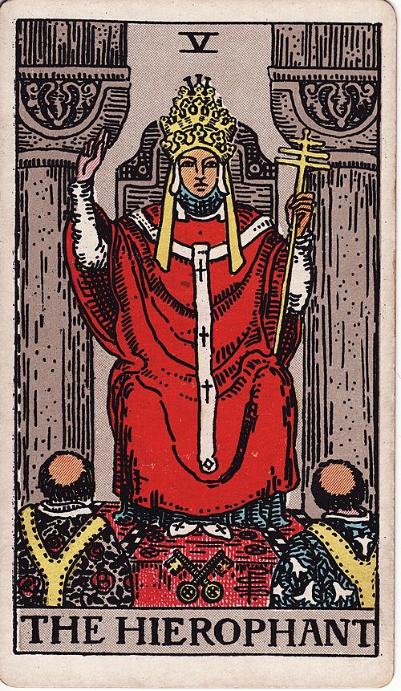
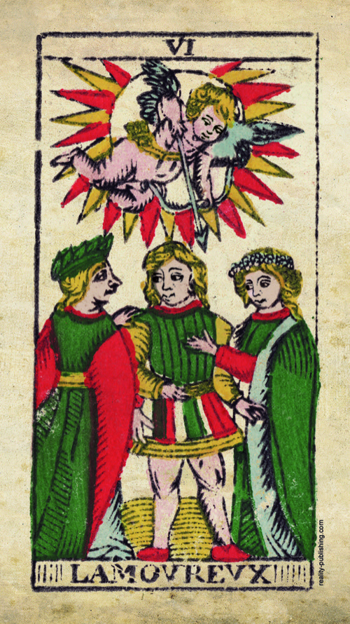
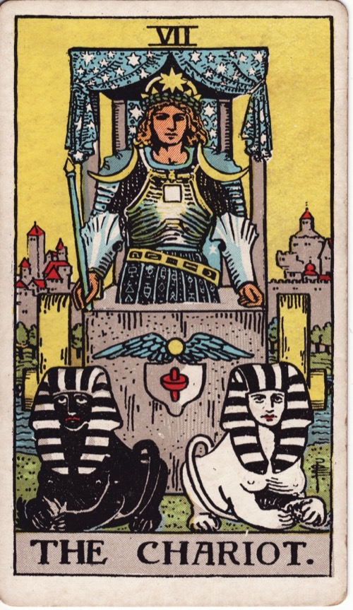
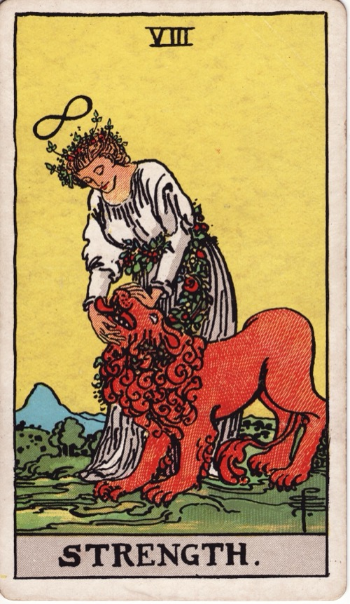
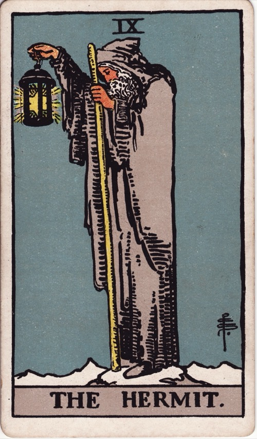
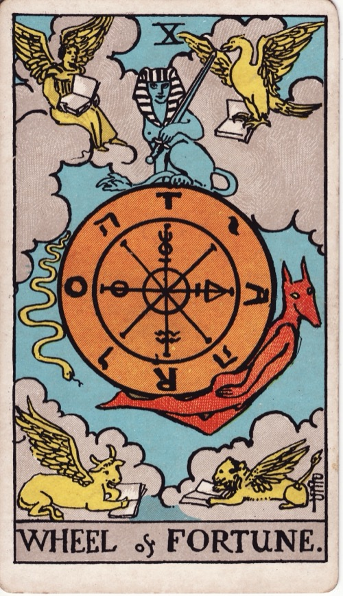
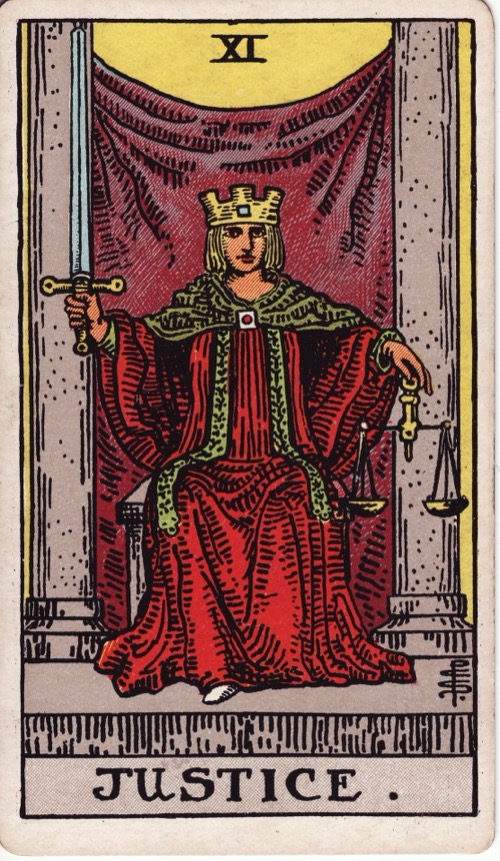
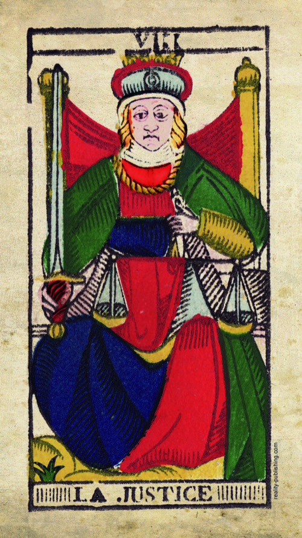
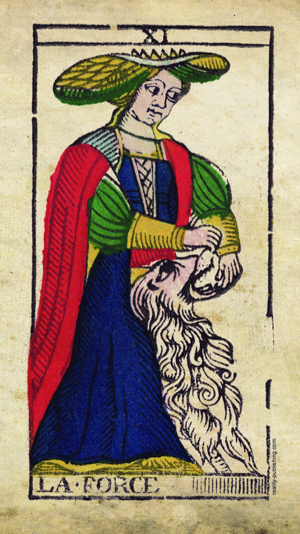

Lesson 07 · Tarot
The First Eleven Trumps
Trumps I to XI are a parade a fifteenth-century card player could read at sight: society's ranks from street conjuror to Pope, then the things that outrank even a Pope. Walk the parade once and these eleven meanings need almost no memorising.
By the end of this page you can take any trump from I to XI and give its three-layer reading: what the figure was in 1450, what the occultists made of it, and what Waite and Smith changed in 1909 — including the one place Waite quietly renumbered your deck, and why.
Lesson 1 established what the trumps are: a fifth suit added to an ordinary pack in the 1440s, numbered so that players could see which card wins the trick. Lesson 2 filed them as the deck's big register — when one lands in a spread, the question itself is large. The sequence also has a shape, which neither lesson mentioned. The first eleven subjects are arranged very nearly in order of worldly precedence, so the game's ranking and the medieval world's ranking run together: people first, sorted by station, and then the forces that no station protects you from. This lesson's method follows that arrangement — for each of these cards, you start from where it stands in the sequence.
The earliest trumps carried no numerals and no titles: "Since trump cards didn't have numbers or names printed on them, we can't be certain of their order or what people called each card," and the imagery was "very familiar to 15th century card players from wall frescoes, illustrated books, plays and pageants" (Tarot Heritage). Regional orders differed in the details, and the numbering in your hands settled with the printed French decks. The parade logic below is the broad shape those orders share, not a single fixed sequence from 1450.
I–V · The people, by station



The run opens at the bottom of society with the bagatella from lesson 1, a fairground conjuror, and climbs through four crowned figures — the Popess, the Empress, the Emperor and the Pope. It ends on the Pope because in the medieval order of precedence spiritual authority stood above temporal authority. A player in 1450 needed no rulebook for this part of the game: the Pope beats the Emperor, the Emperor beats the Empress, and everyone beats the man doing card tricks in the market square, so the trick-taking order simply restates who bows to whom.
The odd figure out is trump II, a woman in a papal tiara, and she is worth a moment because she is the clearest case after the Magician of the layers repainting a card. Her 1909 titles and props read as deep occult mystery, yet the strangeness starts in layer 1: fifteenth-century viewers knew the image as an allegory — a woman in papal regalia stood for the Church itself, the way a woman with scales stood for justice. The occultists then took her literally as a keeper of hidden doctrine. Waite reports the tradition — "she has been called occult Science on the threshold of the Sanctuary of Isis" — and dressed her for the part: pillars marked B and J for the temple of Solomon, a scroll lettered Tora, "partly covered by her mantle, to shew that some things are implied and some spoken," a lunar crescent at her feet (Pictorial Key, II). His printed meaning, for once, matches the picture exactly: "secrets, mystery, the future as yet unrevealed… silence, tenacity." Every detail in the image is holding something back — the covered scroll, the veil sealing the space behind her — so the card reads as what is not yet being told.
On the Popess as period allegory rather than scandal or portrait: "She represents the Church itself and is obviously not a heretical figure" — and the tempting identification with the legendary Pope Joan is "an obvious, but incorrect, choice" (Tarot Heritage, on the Popess).
The remaining three figures read quickly once the stations are fixed. The Empress and Emperor hold the same worldly power in two different tempers, and Smith painted the difference into their thrones: hers is cushioned, set in a wheat field with a heart-shaped Venus shield leaning against it, while his is bare stone with rams' heads, occupied in armour. Waite prints "fruitfulness, action, initiative" for her and "stability, power, protection… authority" for him, and you can justify every one of those words from the furniture alone. The Hierophant keeps the old Pope's whole scene under a new Greek name: enthroned between pillars, keys crossed at his feet, two tonsured monks receiving his blessing. Waite's list runs "marriage, alliance… mercy and goodness… the man to whom the Querent has recourse," and today's shorthand of tradition and institutions reads the same picture — this is the established channel, the person you go through when a thing must be done properly.
VI–VII · What life deals the people



The Lovers is the lesson's second case of the layers rewriting a card, and this time the 1909 change replaced the scene itself rather than adding props to it. The decks before Waite show a choice: a young man between two women, Cupid aiming overhead, and centuries of readers took the card as a decision about desire. Waite knew exactly what he was discarding — his own book says the new design "replaces, by recourse to first principles, the old card of marriage… and the later follies which depicted man between vice and virtue" — and what he put there instead is Eden before the Fall, "the card of human love" plain and simple (Pictorial Key, VI). So this card carries two live readings with dated name-tags: attraction, love, beauty is Waite's 1909 meaning off Waite's 1909 picture, and a choice to be made survives from the older image — many modern readers still use both, and now you can say which tradition each comes from.
The Chariot needs the least translation of the eleven. A prince parading in a triumphal car was a stock image of worldly victory — Petrarch's Triumphs, the pageants lesson 1 pointed to — and Waite prints victory with its price attached: "succour, providence; also war, triumph, presumption, vengeance, trouble." That word presumption, sitting in the upright list, is worth keeping, because the card shows the win at the moment of celebration, and celebration is exactly when overreach begins. Smith put the walled city behind the victor — the lap of honour is happening outside the safe ground.
VIII–XI · What outranks a victor




The four trumps directly after the victory parade are the things that outrank a conqueror, and a fifteenth-century player knew them all from sermons and frescoes: two of the cardinal virtues, Fortitude and Justice; Time; and Fortune. Strength shows fortitude as the virtue actually works — not the fight but the settled mastery after it, a lion "which is being led by a chain of flowers," with the Magician's lemniscate repeated over the woman's head. Waite prints "power, energy, action, courage, magnanimity." Justice shows the virtue that ends disputes: sword upright, scales level, and Waite prints the plainest list in the book — "equity, rightness, probity… triumph of the deserving side in law."
The Hermit began as a different figure altogether. In the earliest decks the card was called Il Tempo, Il Vecchio or Il Gobbo — Time, the Old Man, the Hunchback — and the figure held up an hourglass, not a lantern. Time is what humbles the triumphant, which is exactly why he stands here in the parade. The lantern arrived later, and the occult tradition then read the whole figure as the solitary seeker carrying his own light — which is how the card is read today. Waite's printed list, oddly, does neither: "prudence, circumspection; also and especially treason, dissimulation, roguery, corruption" — fortune-teller's phrases carried over from the older word-lists lesson 5 traced. Modern practice has followed the picture instead, as it usually does: an old man alone on a summit, lighting the way for whoever climbs behind him, reads as withdrawal to seek, and guidance dearly bought (today's consensus). The rule from lesson 5 holds on trumps too: the picture wins.
"We know from numerous Italian essays, poems and lists of trump cards that the card we call 'the Hermit' was named Il Tempo/Time, Il Gobbo/The Hunchback, or Il Vecchio/The Old Man. He carried an hourglass and was the embodiment of Old Man Time" (Tarot Heritage, on the Hermit).
The Wheel of Fortune was medieval Europe's standard image for luck: blind Fortune turns a crank and the figures clinging to the rim rise on one side and fall on the other, kings included. Smith's 1909 version keeps the turning and repaints the riders — a serpent slides down one side, a jackal-headed figure rises up the other, a sphinx sits still on top, and the rim is lettered so that the same four letters read TARO and ROTA, counterchanged with the Hebrew name of God. None of that is medieval, and Waite says so himself: "In this symbol I have again followed the reconstruction of Éliphas Lévi," with Ezekiel's four living creatures set in the corners (Pictorial Key, X). This is the one card of the eleven where layer 2 is painted directly onto the cardboard. The meaning itself came through unchanged: "destiny, fortune, success, elevation, luck" — the turn of circumstances nobody at the table controls.
The renumbering in your deck
Now put your deck's Strength and Justice next to their Marseille ancestors, and check the numerals:


Waite admits the change in print and declines to explain it: "For reasons which satisfy myself, this card has been interchanged with that of Justice, which is usually numbered eight. As the variation carries nothing with it which will signify to the reader, there is no cause for explanation" (Pictorial Key, VIII, 1911).
The reason he was keeping quiet about is Golden Dawn doctrine. Book T's trump table runs the twenty-two cards against the Hebrew alphabet and the zodiac in sign order: Chariot ♋ Cancer, then "Fortitude — Daughter of the Flaming Sword, Leader of the Lion" ♌ Leo, Hermit ♍ Virgo, Wheel of Fortune ♃, then "Justice — Daughter of the Lord of Truth, The Holder of the Balances" ♎ Libra (Book T). The lion-taming card must sit in the Leo slot, eighth, and the scales in the Libra slot, eleventh — so the order's scheme forced the swap, and Waite printed the order's numbering while oath-bound not to print its reason. Doctrine, not history: the Marseille numbering is not an error being corrected.
The eleven at a glance
Meanings in the third column are Waite's own printed lists, compressed — the full versions are three lines each in the Pictorial Key, Part III §3. The last column is what you point at when someone asks how you know.
| Trump | In 1450 | Waite prints (1911) | Point at |
|---|---|---|---|
| I Magician | Street conjuror — lowest trump | "Skill, diplomacy… self-confidence, will" | Four suit emblems on the table; one hand up, one down |
| II High Priestess | The Popess — allegory of the Church | "Secrets, mystery, the future as yet unrevealed; silence" | Half-covered scroll; sealed veil; pillars B and J |
| III Empress | Temporal rule — the fruitful half | "Fruitfulness, action, initiative, length of days" | Wheat at her feet; Venus shield; garden throne |
| IV Emperor | Temporal rule — the fortified half | "Stability, power, protection… authority and will" | Bare stone throne; rams' heads; armour under the robe |
| V Hierophant | The Pope — highest mortal station | "Marriage, alliance… mercy and goodness" | Crossed keys; two monks receiving; raised blessing |
| VI Lovers | Love as a choice — man between two women | "Attraction, love, beauty, trials overcome" | Adam and Eve; angel above; serpent in her tree |
| VII Chariot | Triumphal parade of a victor | "Succour… war, triumph, presumption" | Canopied car; black and white sphinxes; city left behind |
| VIII Strength | Cardinal virtue: Fortitude | "Power, energy, action, courage, magnanimity" | Lion led by flowers; lemniscate repeated from trump I |
| IX Hermit | Il Tempo — Old Man Time, hourglass in hand | "Prudence, circumspection; also… treason" — picture wins: the solitary seeker | Lantern held out; star inside it; grey summit |
| X Wheel of Fortune | Blind Fortune's wheel — riders rise and fall | "Destiny, fortune, success, elevation, luck" | TARO/ROTA rim; sphinx steady on top; riders in motion |
| XI Justice | Cardinal virtue: Justice | "Equity, rightness, probity… the deserving side in law" | Sword upright; scales level; pillars like trump II's |
Do this now · with your deck
Ten minutes, trumps I to XI only.
- Lay the parade. Left to right, I to XI. For the first five, say each figure's station aloud and who it outranks — market square, Church, throne, throne, papal seat.
- Blind the titles. Cover each card's caption band with a spare card and name the 1450 identity from the picture alone. The two hardest are IX and X, and the difficulty there is the repainting's doing, not yours.
- Give the High Priestess the Magician treatment. Lesson 1 had you read trump I aloud in three layers; do the same for II: Church allegory, then occult priestess, then Waite's props — pillars, half-covered scroll, crescent. Say it out loud once; speaking it is what makes it yours.
- Check the swap with your own eyes. Strength beside the Magician first — find the lemniscate on both. Then Strength beside Justice, and say the reason they trade places in one sentence: lion to Leo, scales to Libra.
- Again tomorrow. Shuffle the eleven, draw two, and say which beats which in the game — then one sentence each, built from the 1450 identity. The overnight gap is what stores it.
Check yourself
One attempt per question, no scrolling back up.
A player in 1450 could rank the run from Magician to Pope without a rulebook because…
- The trumps' power follows the social rank of their subjects
- The trumps' power follows the zodiac signs of their subjects
- The trumps' power follows the letters assigned to their subjects
The first stretch of the parade restates the medieval order of precedence: everyone beats the market-square conjuror, the Pope crowns the mortal ranks, and the trick-taking order simply tracks who bows to whom. Zodiac signs and Hebrew letters are Golden Dawn additions from around 1888.
Before the occultists took her over, the woman on trump II was…
- An allegory of the Church in papal regalia
- A portrait of the legendary Pope Joan
- A priestess of Isis in Egyptian regalia
A woman in papal dress was period visual shorthand for the Church itself — "obviously not a heretical figure." Pope Joan is the tempting but incorrect identification, and the priestess of Isis is the occult rereading that eventually gave the card its 1909 title.
Strength sits at VIII and Justice at XI in your deck because…
- Only that order keeps the Golden Dawn's zodiac signs in sequence
- Waite was correcting a numbering error in the Marseille pattern
- Smith delivered the finished paintings numbered that way herself
Book T runs the trumps against the Hebrew alphabet and the zodiac in sign order — the lion card must take the Leo slot at eight and the scales the Libra slot at eleven. Waite printed the result and refused to explain it ("for reasons which satisfy myself"). The Marseille numbering was never an error.
In the earliest Italian decks, the card we call the Hermit showed…
- Old Man Time holding up an hourglass
- A wandering monk holding up a lantern
- A mountain pilgrim holding up a staff
The card was named Il Tempo, Il Vecchio or Il Gobbo — Time, the Old Man, the Hunchback — and the hourglass was his emblem. The lantern and the seeker-in-solitude reading came later, and modern meaning follows that later picture.
Blind from lesson 6: the Queen of Wands lands in a spread about your job search. The course's first question is…
- Whether this posture and suit name a real person around the question
- Whether the card landed next to a trump or a number card
- Whether the Queen's own suit outranks the question's natural suit
Person first, then a side of yourself, then the approach being asked for — and the choice gets said aloud. A warm, capable woman with home-ground command may instantly name someone in your search; if not, keep walking the three questions.
Read this before the next lesson
Read Waite's Part II essays for trumps II through XI — they are a page each. Start at the High Priestess and follow the Next links, with the Internet Archive scans if you want Smith's plates alongside. Watch two things: how precisely he describes what is in the picture, and how often he then gestures at a meaning he declines to state — the Strength entry's "for reasons which satisfy myself" is the manner of the whole book. Then compare any essay with his blunt fortune-telling lists in Part III §3 and notice they often disagree; the Hermit is the clearest case.
I am your teacher here — ask me things. The trumps carry six centuries of argument, and this page skimmed it. Some good ones to throw at me:
“Was there ever really a female pope?” · “What do the Hebrew letters actually do in a Golden Dawn reading?” · “If the Chariot means victory, why is presumption in the upright list?” · “Walk me through the Wheel's four corner creatures.” · “Why does Prudence have no trump?” · “Which of these eleven do modern readers use most differently from Waite's lists?”